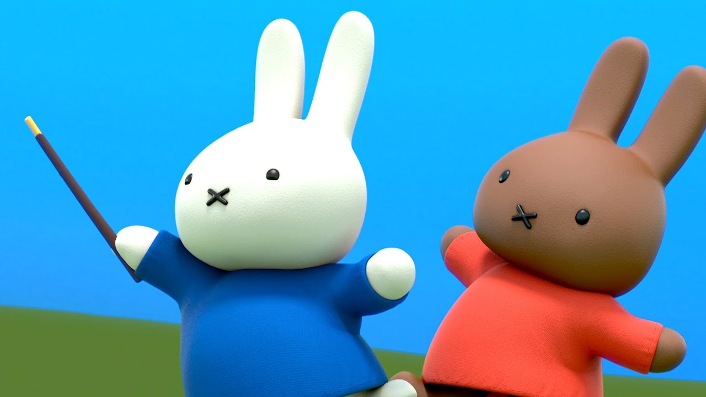
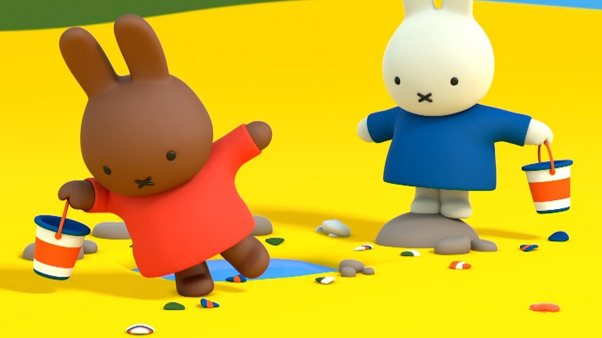
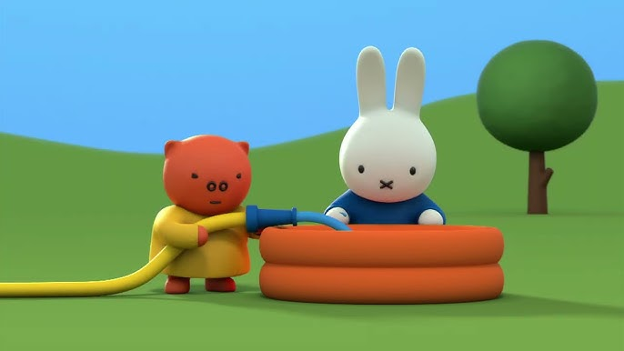
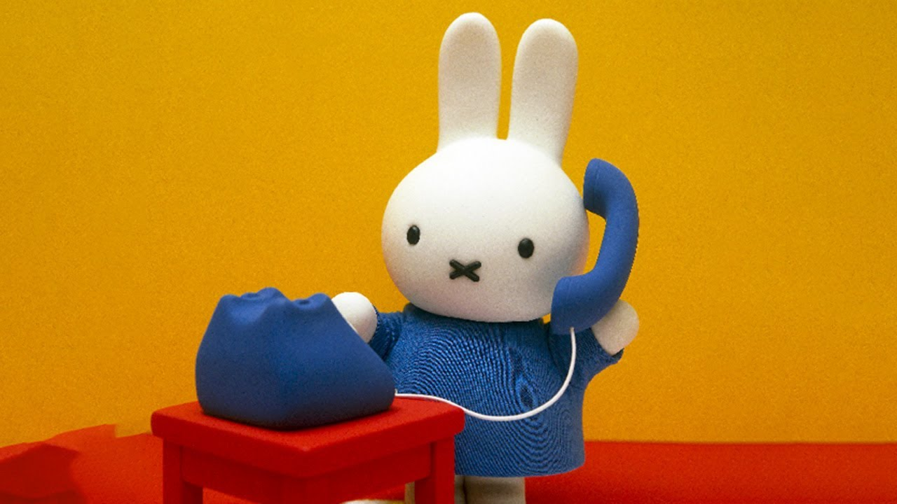
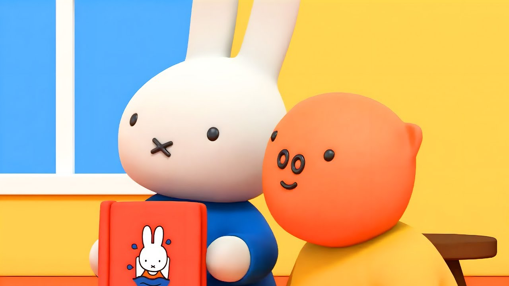
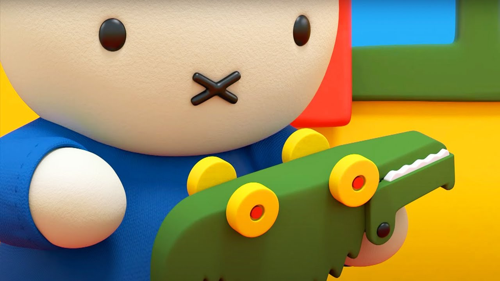
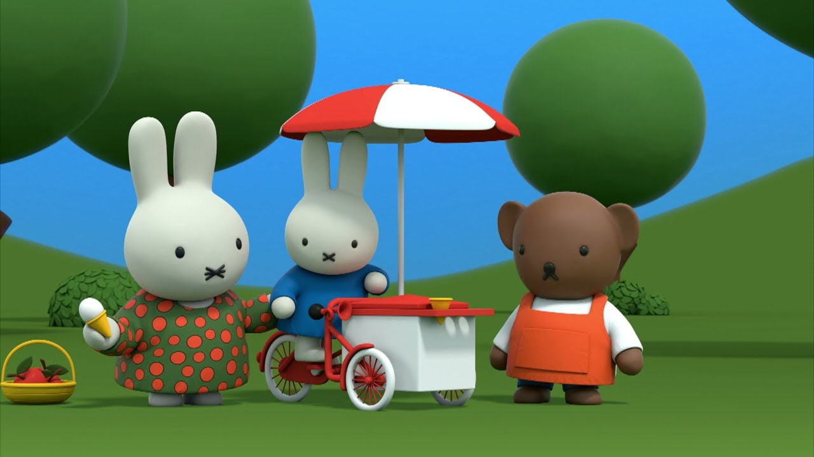

watch, revisit, and explore
miffy media
a little collection of miffy videos, classics, and cozy favorites all in one place.
featured
miffy and friends
A cheerful introduction to Miffy’s world and one of the sweetest places to start.
watch now
browse more
some more sweet picks from Miffy’s little universe

miffy at the beach
Miffy tries to make a sandcastle on the beach, but it keeps falling apart.

miffy and the paddling pool
Miffy makes a splash in this sunny adventure, enjoying a carefree day at the paddling pool with her friends.
miffy the fairy
Miffy mistakes a stick for a magic wand and tries to do fairy magic; wanting to cheer her up, Melanie and Grunty conspire to make her think it is working.

miffy makes a call
One sunny day Miffy decides to visit Poppy Pig. But Poppy is not at home. So she goes to find Melanie, but Melanie turns out to be ill.

at the library with miffy
Aunt Alice is helping out at the library, which means Miffy and Grunty get to help out too. The girls have a great time playing librarian, although their innovative book-filing system nearly leads to disaster!

miffy and the little crocodile
A mix up with school bags leads to Miffy spending the night with someone else’s toy – instead of her lovely soft teddy bear, she’s got Dan’s snappy crocodile!

miffy sells ice cream
Boris discovers that he cannot serve anyone an ice cream from his refrigerated bike until he gets rid of his very persistent hiccups, so Miffy decides to help him.
miffy builds a snowman
Miffy enjoys a snowy day outdoors, building a snowman and embracing the simple joys of winter.